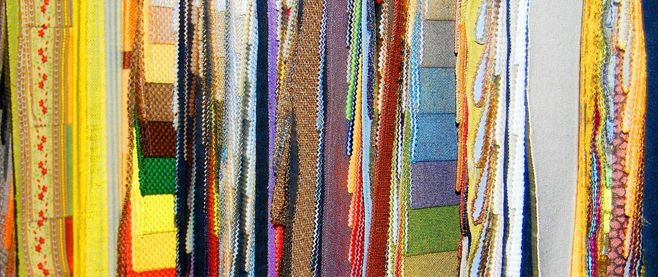
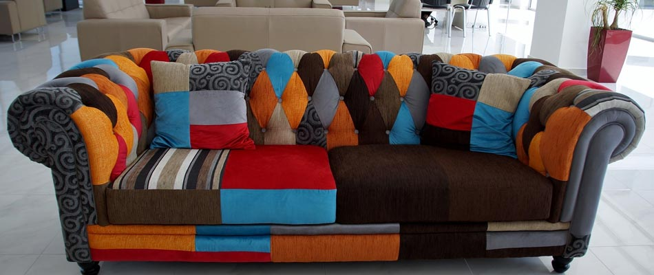
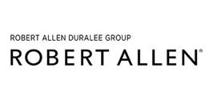
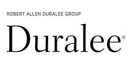
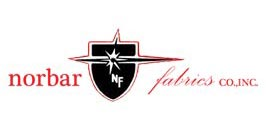

Upholstery Fabrics


Ablyss offers custom upholstery, furniture restoration and furniture repair for residential and commercial clients in Colorado. Quality upholstery depends on craftmanship and superior fabric. Ablyss, offers a huge selection of upholstery grade designer fabrics from trusted brands.
Upholstery Grade Designer Fabric
With over 100 years of combined experience, our skilled upholsterers understand the importance of fabric choice for a quality result. We carry over 1,000 different fabric samples for your convenience.
Upholstery Grade Fabric
Thick
Durable
Comfortable
Made to Last
Stain Resistant
Commercial Grade Fabric
Commercial grade upholstery fabric is designed to withstand the constant wear-and-tear of high-traffic commercial use. Our premier upholstery shop in Denver, Colorado supports commercial clients throughout the furniture design process to create pieces that fit your brand image. Keep your business looking modern and well-kept with updated upholstered furniture. We understand that commercial furniture must be durable, comfortable and aesthetically appealing.
Commercial Grade Upholstery Fabric
Durable
Stain Resistant
High-Quality Material
Comfortable
Stylish
Unique Design Options
Top Upholstery Fabric Types
Upholstery fabrics come in a wide variety of materials. The selection of materials works for different design and functional needs. We carry a vast collection of both residential and commercial upholstery fabrics to meet each individual client’s needs.
Popular Furniture Fabric Types
Chenille
Suede
Vinyl
Leather
Hair on Hide
Pattern
Woven
Tweed
Velvet
Florals
Jackard
Gimp
Fringe
Types of Fabric Furniture
Many different types of furniture are upholstered. Fabric adds comfort and style to custom furniture. From commercial restaurant booths to back porch seating, quality fabric is key to the durability and design of upholstered furniture.
Common Types of Upholstered Furniture
Outdoor Sectionals, Chairs, Cushions and Ottomans
Sofas and Sectional Sofas
Cushions
Arm Chairs
Dining Chairs
Ottomans
Upholstered Headboards
Storage Units
Restaurant Booths
Waiting Room Couches and Chairs
Trusted Brands
Ablyss carries a huge selection of fabrics from top-quality brands. We offer our clients the best available upholstery fabrics. In fact, we have over 1,000 samples available to help you choose the perfect fabric for your furniture.
Our Showroom Brands



Sunbrella
Wipelli Leather
Edelman Leather
Nail Heads
Nail heads create a finished look for upholstered furniture. Ablyss carries a large assortment of nail heads to create custom designed furniture. In a variety of sizes, metals, and styles, we offer the perfect option for you. Work with our design support professional to select the right nail head to meet your needs. From large to small and brass to silver, we’ve got an option for your design style.
Design Support
Selecting the best combination of fabric and nail head to achieve the look you want for your upholstered furniture can feel overwhelming. Let us help you. We offer on-site design support in our showroom to help guide you in the design of your upholstered furniture. We prioritize customer satisfaction and offer the design support to get you started.
Visit our Showroom
Visit our Denver, Colorado Showroom to see fabric samples, nail heads and start your custom furniture project. At Ablyss, we offer professional experience in furniture and antique restoration, repair and upholstery. Contact us today!